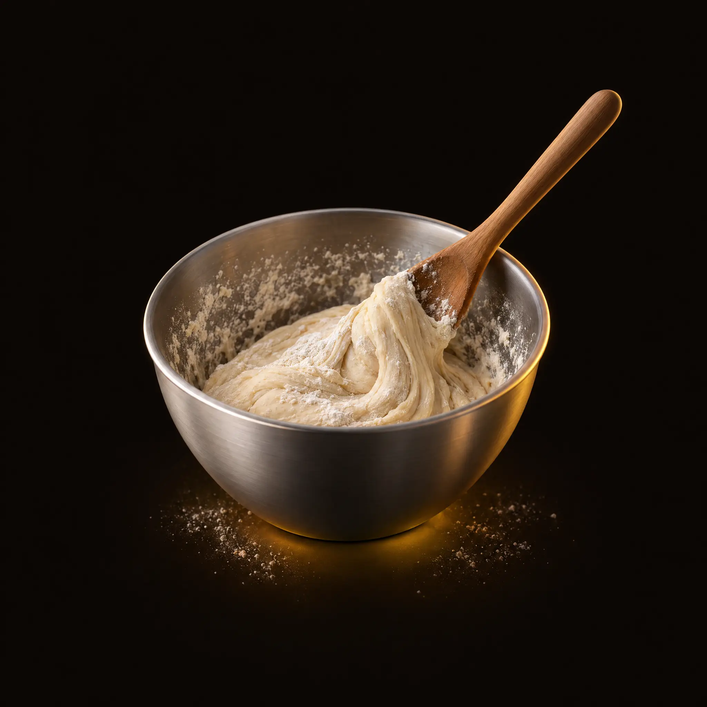
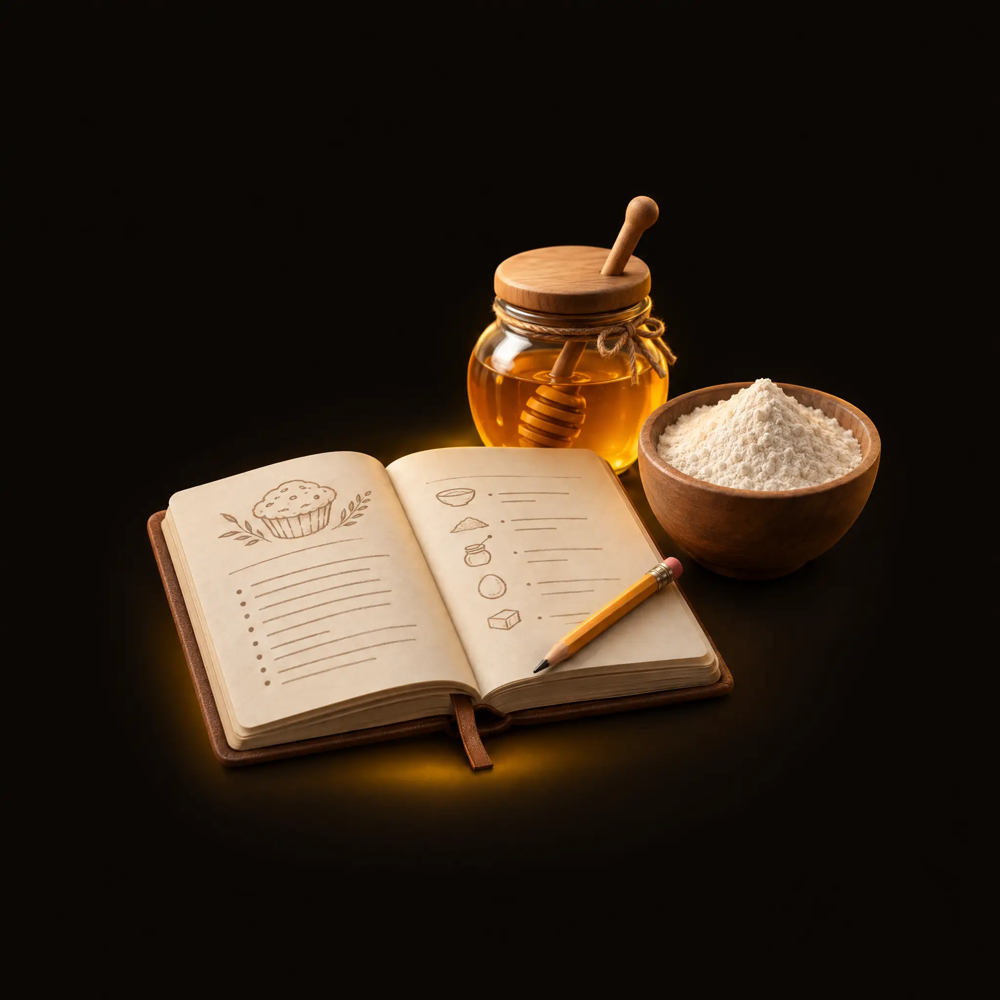
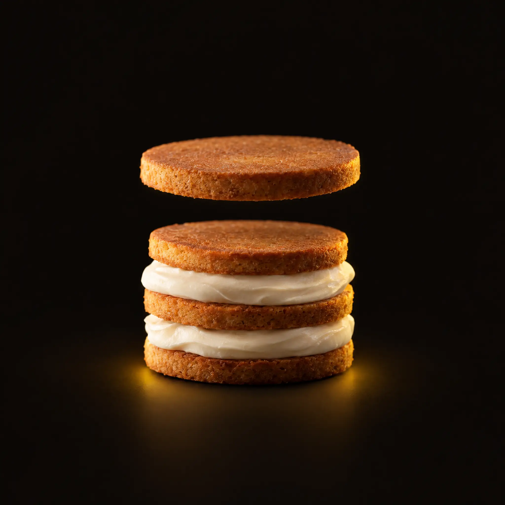
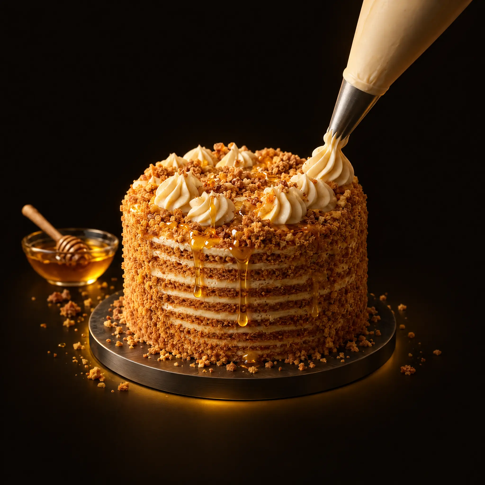
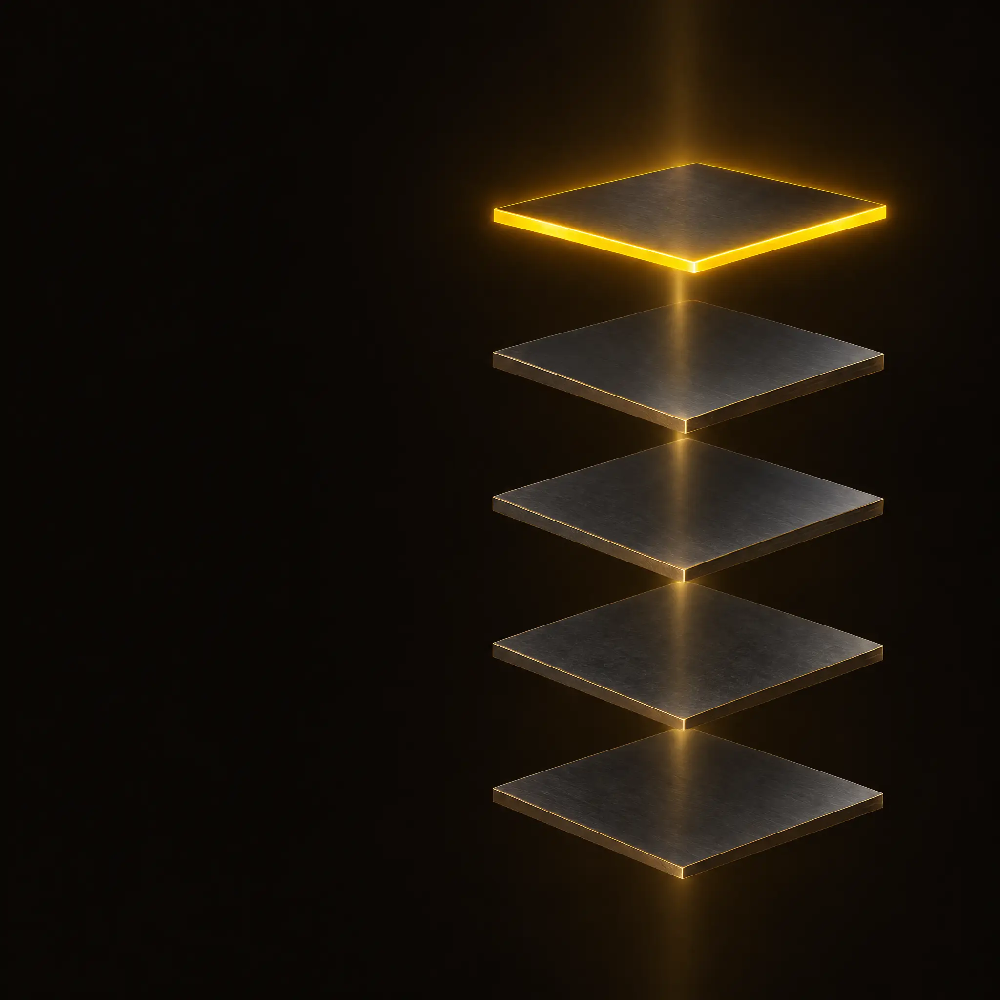
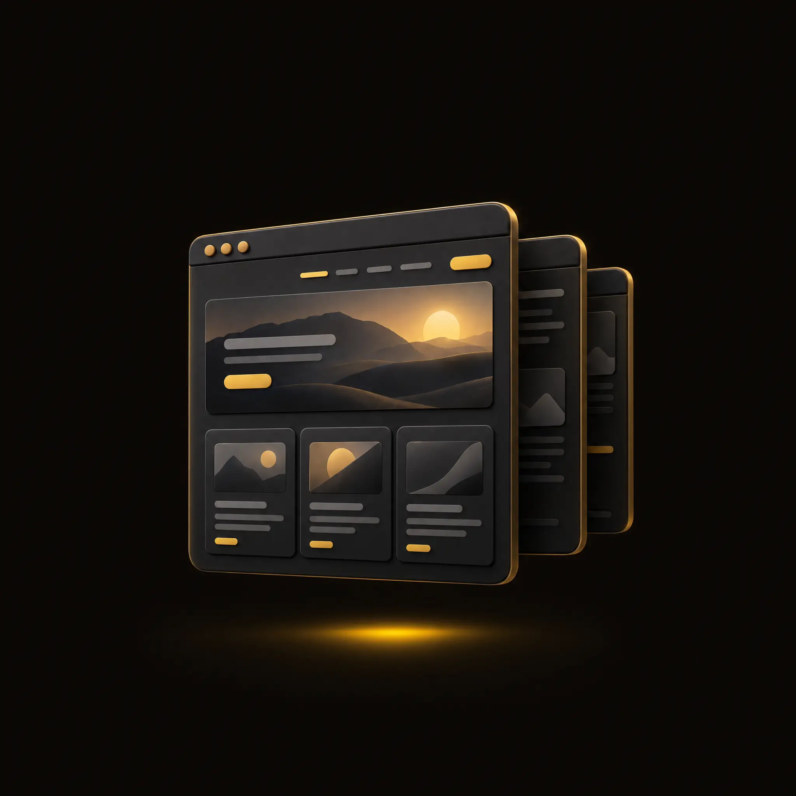
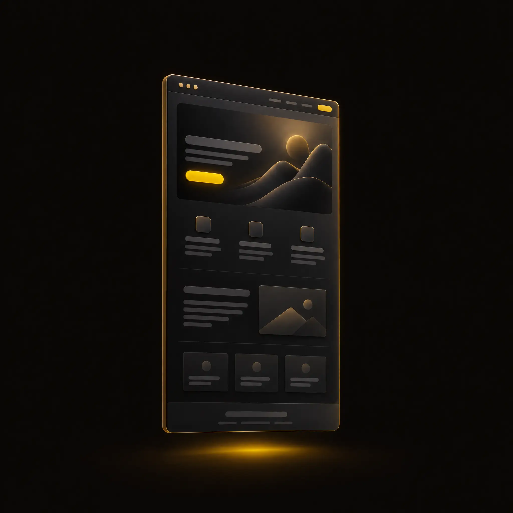
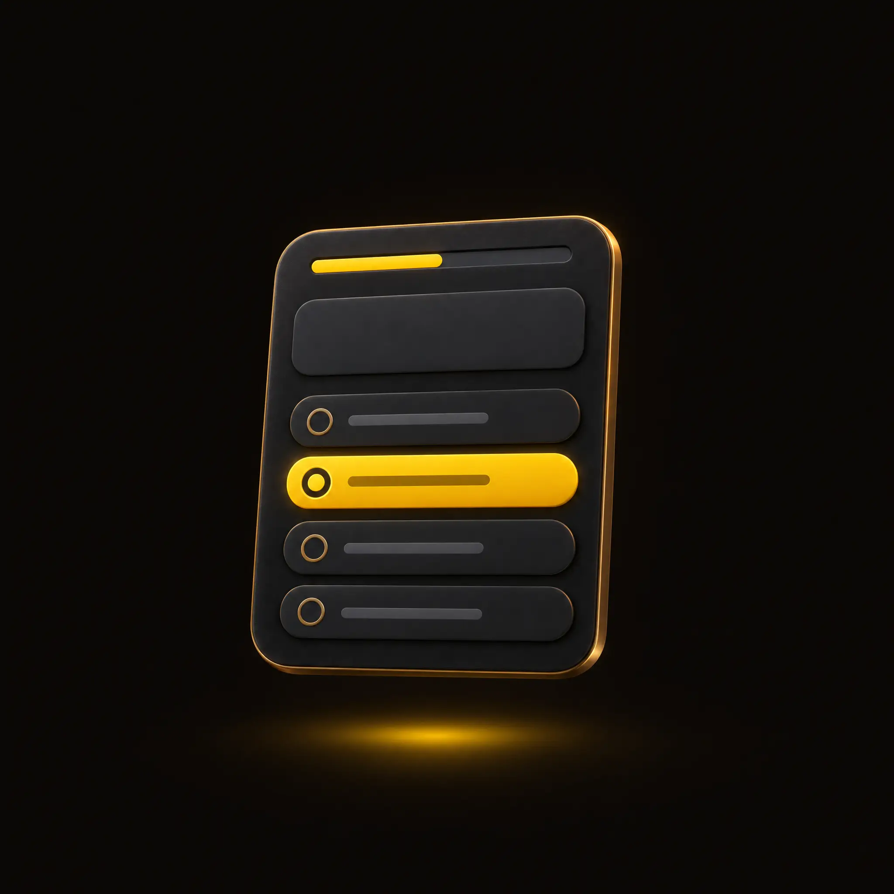
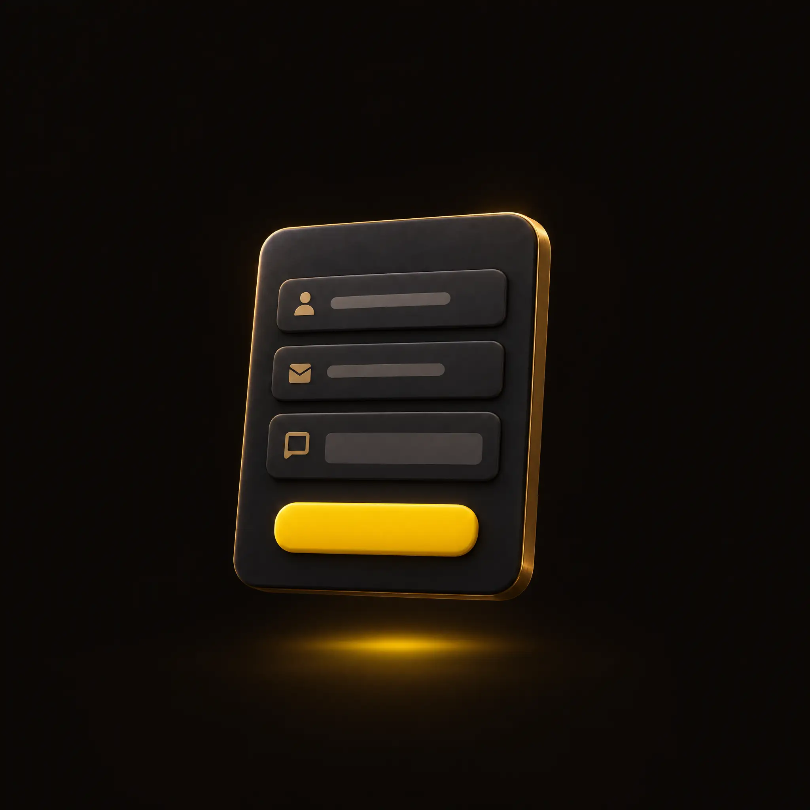
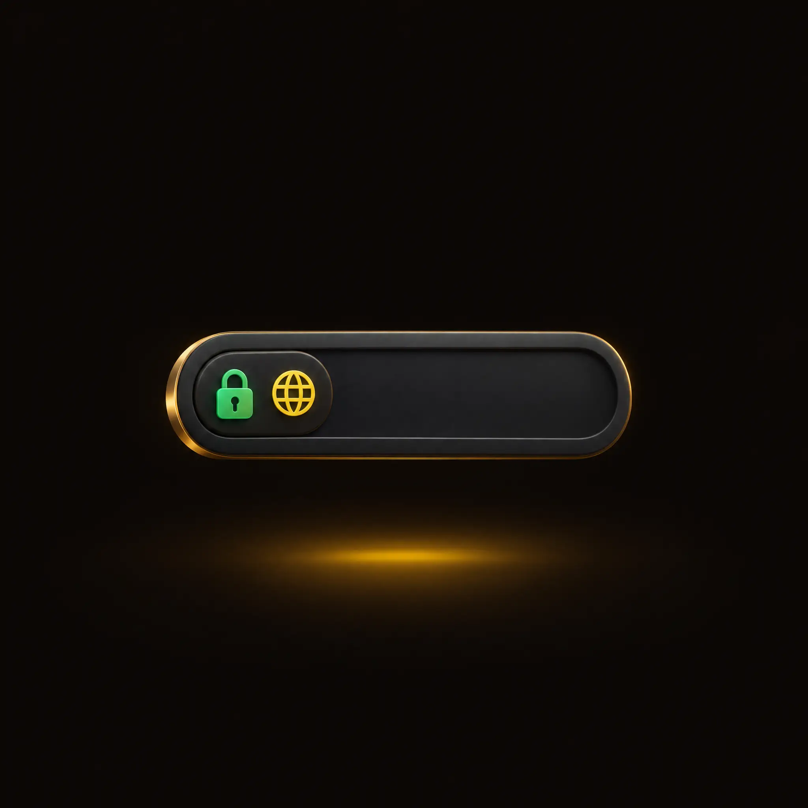

Усі картинки нижче вже згенеровані (GPT Image 2.5, у стилі «темний метал + латунь + жовтий»). Відео для 164 — ще не генерувалось: спочатку розкадровка й вартість.

00:04 / 00:12
Рецептизучает нишу и соседей
Сборкапишет тексты, ставит блоки
Украшениедоводит до готовой ссылкиНикто не печёт весь торт. Каждый делает свой этап и передаёт дальше
timeupdate: секунди 0–3 → «Рецепт», 3–6 → «Замес», 6–9 → «Сборка», 9–12 → «Украшение». Активна картка спалахує жовтою рамкою, решта притемнена.Параметри: seedance_2_5 · t2v · 12s · 16:9 · 1080p — 108 кредитів (720p — 78). Можна дати 4 ключові кадри як референси (omni_reference) — тоді відео точніше збігатиметься з іконками карток. Після твого «ок» генерую; якщо перша спроба поламає таймінги етапів — друга спроба ще стільки ж.

Уберите эти слои — и останется обычный чат
Пять слоёв × четыре этапа — и это только один торт
Внутри каждого агента — часы работы и обучения на каждый этап
Один такой агент — это больше ста часов моей работы: пишешь, ломаешь, смотришь, где он ошибся, переписываешь. И так по каждому.
Вам его собирать не надо. Он уже собран

Сайткоторый продаёт
Лендингкоторый продаёт
Квизсам квалифицирует заявку
Формывечер вместо недель
Доменвечер вместо недельcall-summary-landing.vercel.app — собран агентом за вечер